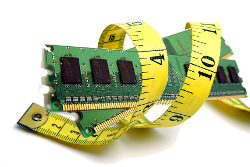
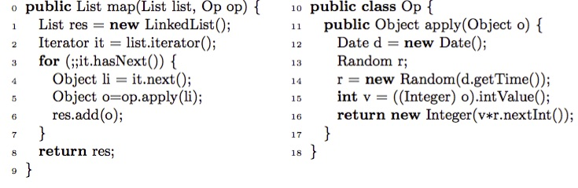

JConsume
Welcome to JConsume home page!

JConsume 2.0 is a memory consumption analyzer for Java bytecode. It computes parametric expressions that over approximate the maximum number of simultaneously live objects ever created by a method, where by live we mean irreclaimable by any garbage collector. Computing the number of live objects is a key underlying step in all client analysis techniques aiming at computing dynamic-memory requirements.
JConsume implements a new compositional quantitative analysis aimed at inferring non-linear upper-bounds on the number of irreclaimable objects that may be stored in the heap at any point in the execution of Java-like programs, including polymorphism and implicit memory management. The analysis is based on the compositional construction of live objects summaries for every method under analysis. More concretely, it over-approximates both a) the maximum amount of fresh objects which are simultaneously alive during the execution of the method and b) the number of created objects that may remain alive after the method finishes its execution.
Summaries are built up using method local information (e.g., their own allocations) and precomputed summaries of called methods. Since the behavior of a method can vary a lot with the arguments it is called with, summaries are parametric in order to provide bounds that can depend on the arguments.
Download
Soon!
How it works?

Let us consider the statements in map that allocate memory: the new in line 1, and 3 method invocations, namely in lines 2, 5 and 6, with the last two inside a loop. To compute a summary for method map we will use inter- mediate results to make the formulas easier to read. These intermediate results are attached to lines of the source corresponding to statements that allocate memory. Lines 1 and 2 are the simplest cases. We can associate the following simple summary to any new: MaxLive1 = MaxLivenew = 1 Esc1 = Escnew = 1
Similarly for the iterator: MaxLive2 = MaxLiveiterator = 1 ; Esc2 = Esciterator = 1
The call to the method apply at line 5 is inside a loop. Therefore, we resort to an invariant to characterize the iteration space corresponding to that statement: Inv5 =1≤i≤list size where list size is a formal variable representing the length of the list (i.e., list.size). Objects escaping from apply will live in map’s scope. Clearly, such number contributes to MaxLive of map. Thus, the amount of escaping objects from apply at each iteration must be accumulated as it contributes to the total amount of live objects in the scope of map. Besides, objects not escaping from apply are also alive during (part of) the execution of map. Therefore, they should also be counted in MaxLive of map. However, since the number of those objects may be different at each iteration, it would be sufficient to count only the maximum such number over all iterations to obtain an over-approximation.
That is, MaxLive5 =|_|(Inv5)(MaxLiveapply − Escapply) + SC.Summate(Escapply, Inv5, list size) = |_|1≤i≤list size (3 − 1) + SC.Summate(1, 1 ≤ i ≤ list size, list size) = 2 + list size
Notice that we subtract the number of escaping objects from the overall num- ber of live objects of apply since this amount is indeed accounted for in the SC.Summate.
Let the symbolic calculator SC provide an operation SC.UpBound which computes the max of an expression over a domain. In this case, we could write:
MaxLive5 = SC.UpBound(MaxLiveapply − Escapply, Inv5, list size) + SC.Summate(Escapply, Inv5, list size)
Let us look now at Esc5. All objects escaping from apply are added to the returned list. Consequently, they also escape from map.
Therefore: Esc5 = SC.Summate(Escapply, Inv5, list size) = SC.Summate(1, 1 ≤ i ≤ list size, list size) = list size
To compute the intermediate result for line 6, we make use of the summary of method called at this line, that is add. Its summary is: MaxLiveadd = 1 ; Escadd = 1
Since the call is in the loop, we proceed as for apply. The invariant at line 6 is: Inv6 =1≤i≤list size MaxLive and Esc at at line 6 is computed as follows:
MaxLive6 = SC.UpBound MaxLiveadd − Escadd, Inv6, list size + SC.Summate(Escadd, Inv6, list size) = 0 + list size = list size
Esc6 = SC.Summate(Escadd, Inv6, list size) = list size
Finally, to obtain the summary of map we compose the previous results as fol- lows. MaxLive for map is the sum of the corresponding Esc for all lines plus the the maximum MaxLive of all lines but discounting the corresponding Esc:
MaxLivemap = MaxLivel − Escl + Escl l∈{1,2,5,6} l∈{1,2,5,6} = ⊔ {1 − 1, 1 − 1, list size + 2 − list size, list size − list size} +(1+1+list size+list size) =2+(2+2×list size)=2×list size+4
Esc of map should count all objects that (may) escape from map. From all objects accounted for in Escl, for l ∈ {1, 2, 5, 6}, only the iterator allocated at line 2 is captured by map. All other objects escape. Thus, we get:
Escmap = Esc1 + Esc5 + Esc6 = 1 + list size + list size = 2×list size+1
Publications
-
Víctor A. Braberman, Diego Garbervetsky, Samuel Hym, Sergio Yovine:
Summary-based inference of quantitative bounds of live heap objects. Sci. Comput. Program. 92: 56-84 (2014) -
Rodrigo Castaño, Juan Pablo Galeotti, Diego Garbervetsky, Jonathan Tapicer, Edgardo Zoppi:
On Verifying Resource Contracts using Code Contracts. LAFM 2014: 1-15 -
Diego Garbervetsky, Sergio Yovine, Víctor A. Braberman, Martín Rouaux, Alejandro Taboada:
Quantitative dynamic-memory analysis for Java. Concurrency and Computation: Practice and Experience 23(14): 1665-1678 (2011)
Contributors
Diego Garbervetsky (Departamento de Computación, FCEyN, UBA and CONICET)
Samuel Hym (LIFL, Université Lille 1 and CNRS)
Víctor Braberman (Departamento de Computación, FCEyN, UBA and CONICET)
Sergio Yovine (Departamento de Computación, FCEyN, UBA and CONICET)
Sven Stork (Departamento de Computación, FCEyN, UBA and CONICET)